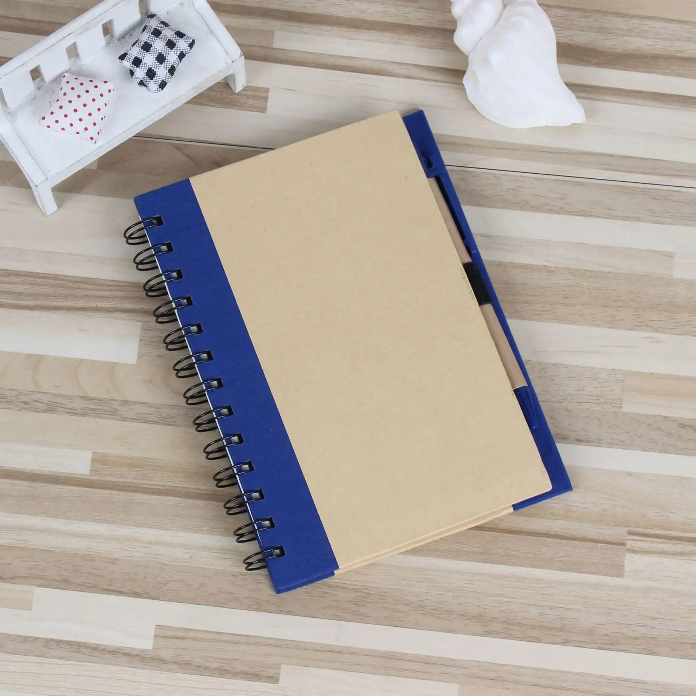
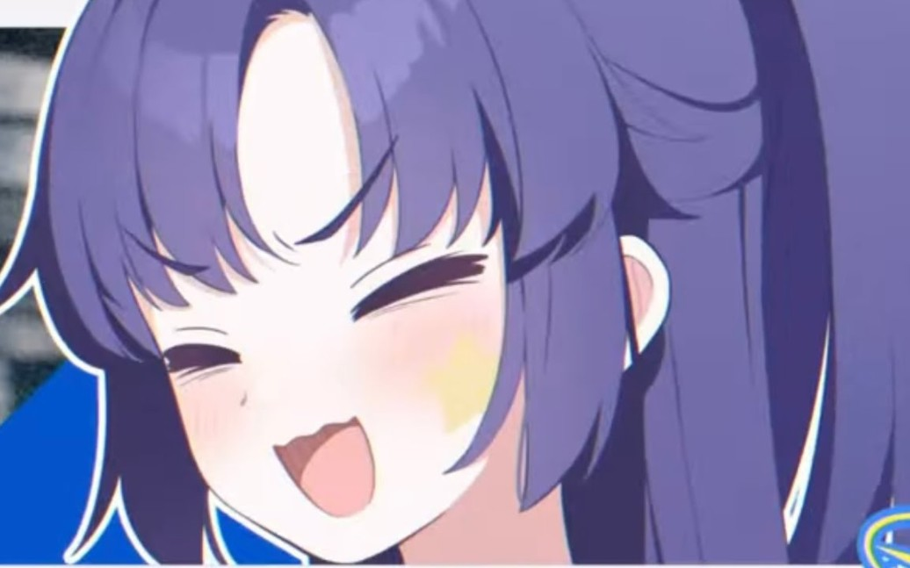

这是关于我的故事。也许很多年之后我会为了我的幼稚忍俊不禁，但是我真的认为这是一次涅槃。
说起来，复读生在大家的眼里是什么印象？很多人有两种stereotype吧，觉得要复读的人都是不上进的学习很差的人。
我在复读之前，也是这么觉得的。那时我在模考中披荆斩棘，几乎没有在哪次考试中失利过。班上复读的同学揶揄我：“你真的不担心要复读吗？”我对此不屑一顾：“复读？干嘛？再考一年冲省状元吗？”然而我的确没有想到，22年的数学难得让我大脑一片空白，握住黑笔的手不断颤抖，甚至在下考命令下达时泪水直接打在了答题卡上。
由于之前太过张扬或者说锋芒毕露的性格，几乎没有什么同学主动来安慰我。又由于我脱不掉的孔乙己的长衫，我不愿意找他们诉苦。渐渐地，大家在群里的志愿报名讨论盖过了对我落榜的讨论。甚至到了后来，变成了对我的怀疑。“他平常真的没作弊吗？这个水平怎么可能没考上清北？”
起初我也很愤怒很孤独，因为我自己的原因很难交到新朋友，总是觉得自己不该与比我小一届的是同龄人。在他们眼里，这个突然来班上复读的男生是个不爱讲话的怪人：喜欢提前交卷，喜欢在同学都基本散去的周五晚上在操场上一个人疯狂奔跑。家里人，同学们虽然明面上说着没关系，但是父亲酒后的某次大发雷霆，喜欢的女孩去了南京，曾经的老师失望的眼神……一切仿佛都告诉我我犯了一个大错。
日月掌灯，山河镇纸。我在许多个只剩星光的夜晚遥想着过去，想着要是这一切没有发生，要是那天我手感火热，或许今天是不是会完全不一样？
暑假快要结束的那几天，之前那个复读的同学联系上我，陪我走了整整三个晚上。我们聊了很多，聊了该死的试卷，该死的出题人和古怪的阅卷老师，聊了今后人生的打算：从背起书包到躺进坟墓。最后他很认真地告诉我：“选好了路就不要后悔了，从今以后你和一年前的你没有任何瓜葛，一切从零开始。只有埋葬了心魔才能涅槃重生。”我和他原本只是点头之交，但是他仿佛告诉我他这一年所有的教训。

|
就这样，我带着他的教诲再次出发。中间历经了多少波折。很多个晚上我哭着给他打了电话，很多个晚上我把今天的收获仔细的记录下来编成日记。毫不夸张地说，如果不曾遇见他，我不一定能够经受住这些考验，换句话来说，活着来到华科。
虽然说最后也没读上清北，但是这一年我确确实实是没有什么遗憾了。我真的全面提升了自己，终于褪去了本来一身的稚气，学会如何蛰伏着成长，学会如何独自整理情绪，学会在逆境中暂时低下头颅，更学会了欣赏他人，承认自己在很多方面确实需要多多学习。如果没有这一切，就算原本考得再好，到了大学我也会一无是处吧。
所以今天回头一看，虽然对其他人来说只是人生的小插曲，但是对于我来说，的的确确是涅槃。你所看到的所有挫折，换一方面来看，其实都是机遇。这是我学到的。

|
终于把网页做完了！